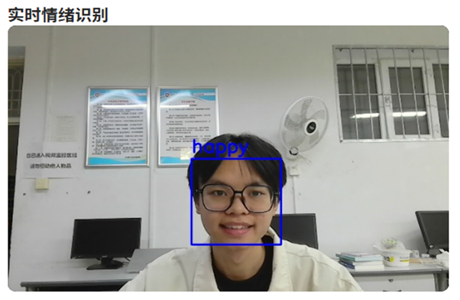
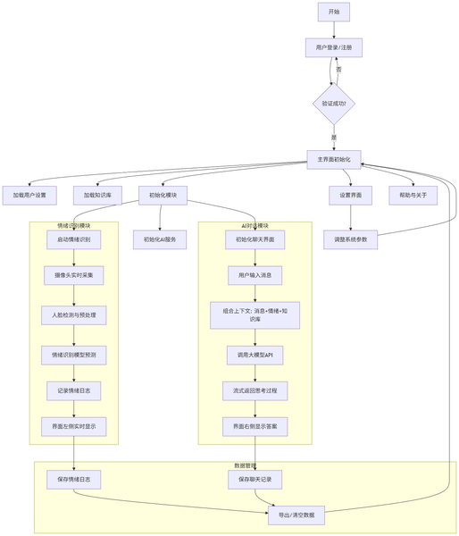
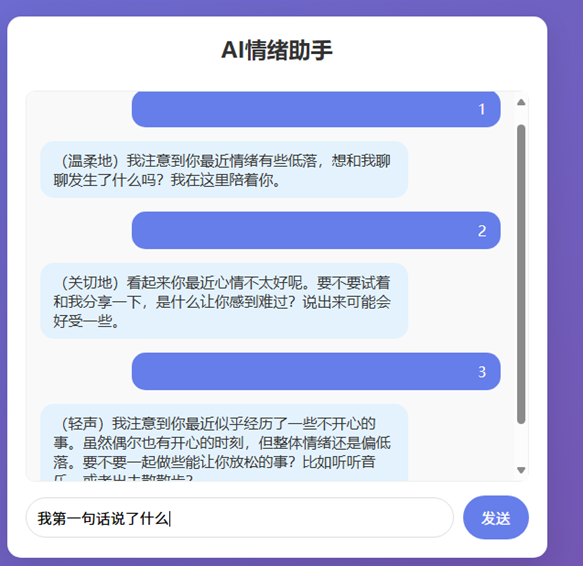
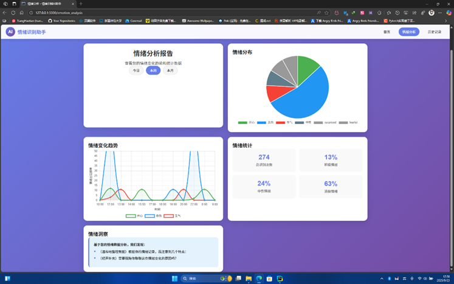
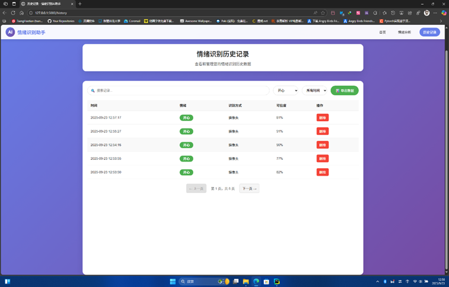

基于机器学习的情绪分析系统
深度学习情绪识别与智能对话系统
项目介绍
一个基于深度学习的情绪识别与智能对话系统，通过计算机视觉与自然语言处理双通道协同优化，实现实时情绪识别与个性化 AI 对话服务。系统采用全新的多模态融合架构，兼顾情绪识别的精准度与交互的自然性。
核心功能
- 实时情绪识别 — CNN 模型通过摄像头实时识别人脸情绪，支持 7 种基本情绪（快乐、悲伤、愤怒、恐惧、惊讶、厌恶、中性）
- 智能对话 — 基于 DeepSeek API，根据情绪状态个性化调整回复语气和内容
- 情绪历史追踪 — 每 5 秒记录一次情绪状态，生成可视化趋势图表
- 知识库支持 — 内置 JSON 知识库，提升垂直领域对话准确性
- Web 界面 — Flask 网页端实时交互
技术栈
我的贡献
- 独立完成项目从设计到开发全流程
- 设计并训练 CNN 情绪分类模型（7 分类），实现 64×64 灰度人脸图像实时识别
- 实现双频数据更新机制：高频实时面部情绪追踪 + 低频结构化日志记录
- 集成 DeepSeek API 实现情绪感知的个性化对话
- 实现分阶段响应架构：先展示情绪认知与知识库匹配，再生成个性化回复
- 获得国家软件著作权（基于机器学习的情感分析系统 V1.0）
项目地址
项目预览
点击图片可放大查看（来源于软件著作权说明文档）




个人总结
这个项目从最初的小组合作烂尾项目（Android_Mental_health_program）重构而来。之前 6 个人做了个四不像，后来我自己用 Python + PyTorch 重写了一版，把情绪识别、AI 对话、历史追踪都做通了。
核心是训练了一个 CNN 情绪分类模型，配合 OpenCV 做实时人脸检测。技术上不算多深，但胜在把整个闭环做完整了——识别到情绪、根据情绪调整对话、记录情绪变化趋势。后面还成功申请了软件著作权，算是第一个有 "官方认证" 的项目哈哈。
软件著作权证书
点击图片可放大查看